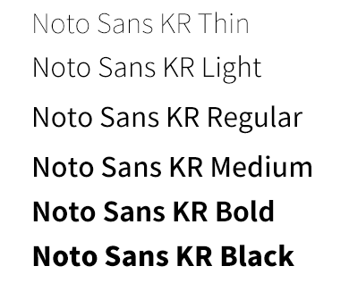

Style
#Similarly
#Look good
- #비슷하게
- #이쁘게
- #보기좋게
Font
- Noto Sans KR
- 
Color
-
#eddfc9
-
#f7f7f7
-
#a3afa8
사진의 컬러와 비슷하게 사용하여
통일감을 주며, 사진보다 채도가 낮은
색상을 사용하여, 보기 편안하도록 하였다
Realization
제가 만든 반응형 웹사이트는 의류, 신발을 판매하는 컨버스 홈페이지의 구조를 따와서
클레어스 라는 뷰티 홈페이지의 내용을 넣은 작업물 입니다.
처음 만들어보는 반응형 웹사이트다 보니 중간중간 미숙한 부분들이 보여 아쉬움이 많이 남습니다.
그래도 가장 최선을 다해 만들어서 애정이 많이 가는 홈페이지 입니다.
-
신상품 보러가기 파트에 사진들을 ajax를 사용하여 홈페이지에 보이게 하고 싶다.
→ json파일을 만들어 사진들의 경로와 이름을 작성해준 뒤 html파일 하단에 ajax를 작성해 해결하였다.
-
제품을 보여주는 파트에서 하트,카테고리,제품이름,가격,이미지를 원하는 위치에 놓고싶다.
→ position:relative 값을 주고 각각 absolute로 원하는 자리에 위치할 수 있도록 값을 주어 해결하였다.
-
모바일 버전에서 신상품보러가기, 베스트상품 보러가기 부분을 옆으로 넘어가는 슬라이드를 주고 싶다.
→ swiper API 를 사용하여 슬라이드효과를 적용하여 해결하였다.
-
모바일 버전에서 메뉴아이콘을 누르면 메뉴가 나왔다가, X버튼을 누르면 다시 사라지게 하고 싶다.
→ 모바일 용 메뉴를 만든 뒤 js로 버튼제어를 할 수있게 하여 해결하였다.
홈페이지 보러가기
My portfolio